Continuous Model Monitoring with Evidently
Monitoring a deployed machine learning model is critical to ensuring model performance over time. CML's model metrics combined with Evidently, an open source tool for evaluating, testing, and monitoring machine learning models, is a powerful tool to combat model drift.
In this exercise, you will:
- Start the Continuous Model Monitoring AMP
- Launch the Price Regressor Monitoring dashboard
- Explore drift and variations in the model performance
- Identify the file that creates the Evidently dashboard
- Experiment with Evidently reports
Warning
The initial deployment of the AMP takes approximately 30 minutes.
Start the Continuous Model Monitoring AMP
-
Click AMPs 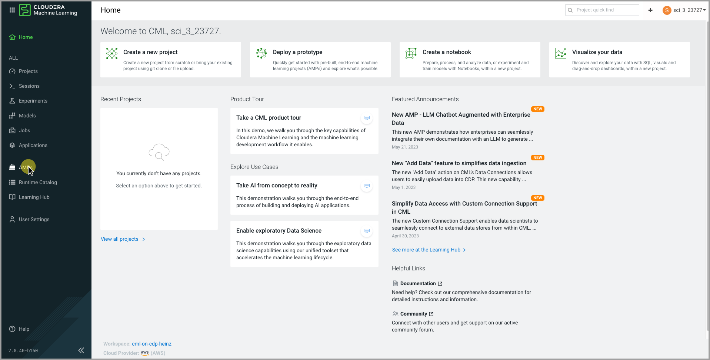
-
Click Continuous Model Monitoring AMP 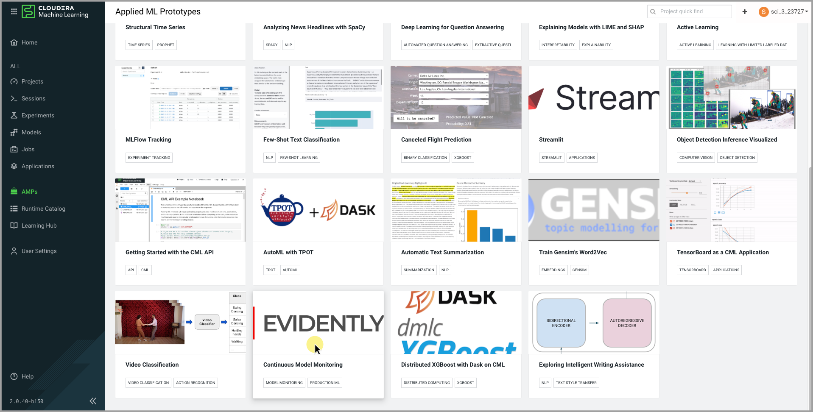
-
Click Configure Configure & Deploy 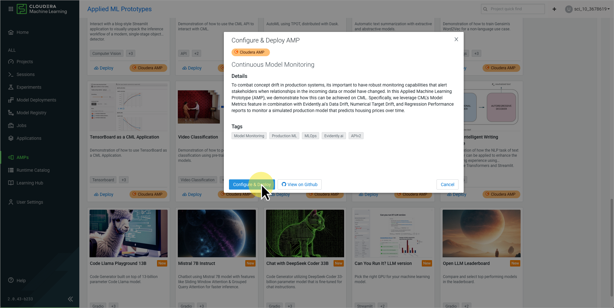
-
Set Dev Mode to
True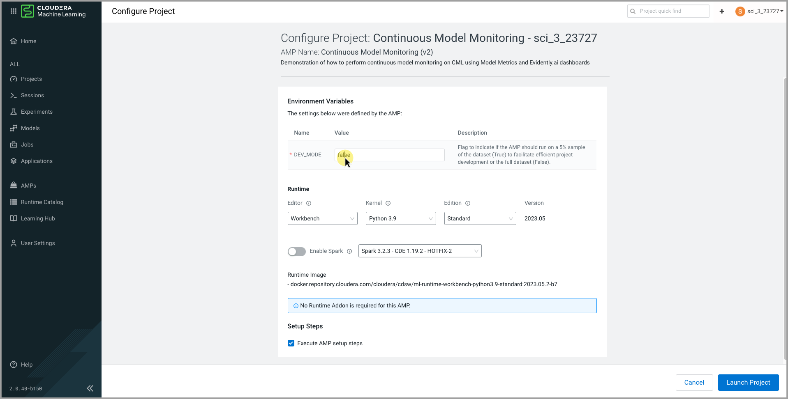
{kind=link}
{kind=link}
{kind=link}
{kind=link}
Warn
You must select Python 3.7 or the AMP will fail.
{kind=link}
{kind=link}
Launch the Price Regressor Monitoring dashboard
-
Click Applications in the left-side menu 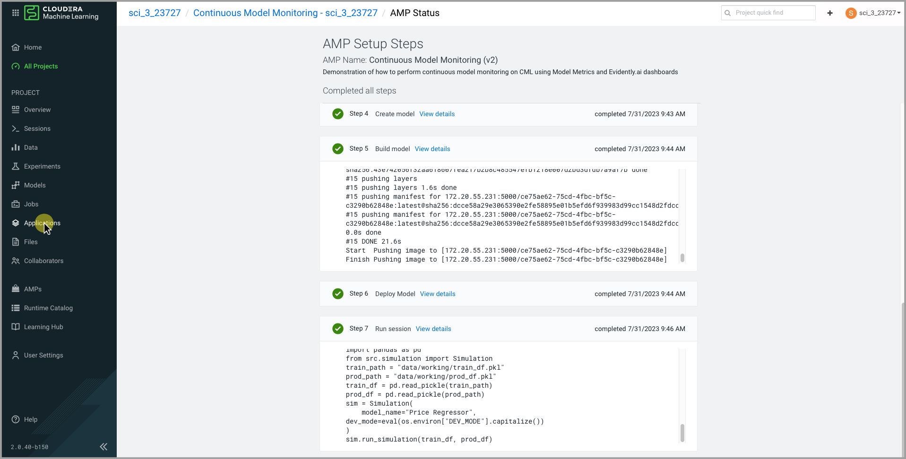
-
Click the application ⋮ menu 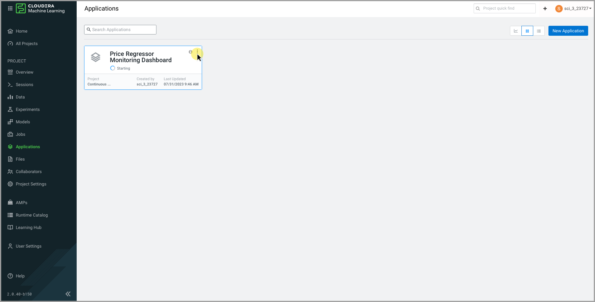
-
Click Application Details 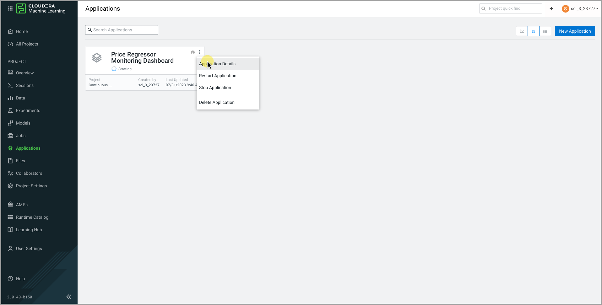
-
Click Settings 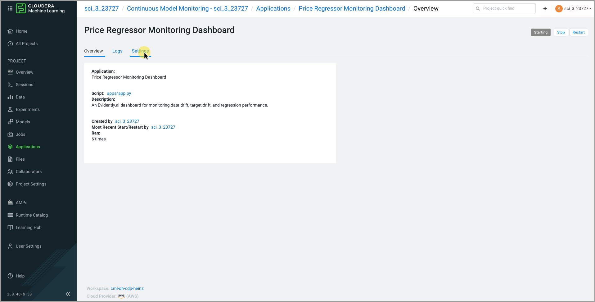
-
Change Kernel to Python 3.7 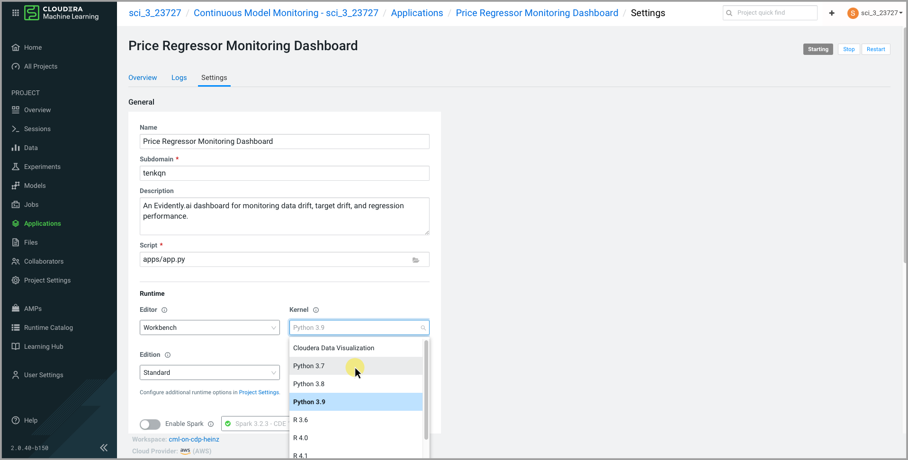
-
Click Update Application button 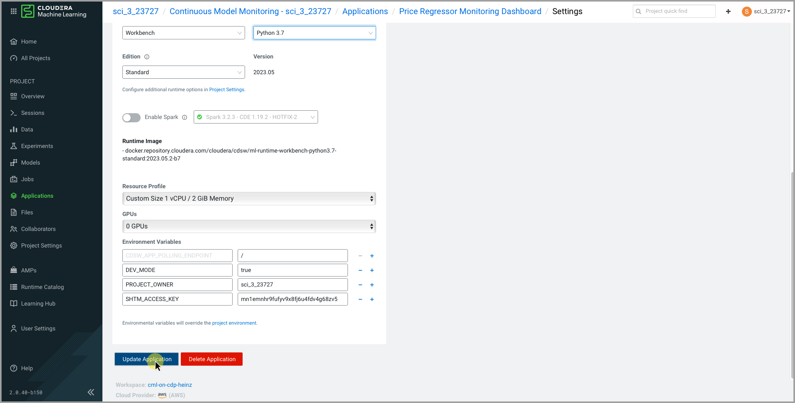
-
Click Applications in the left-side menu 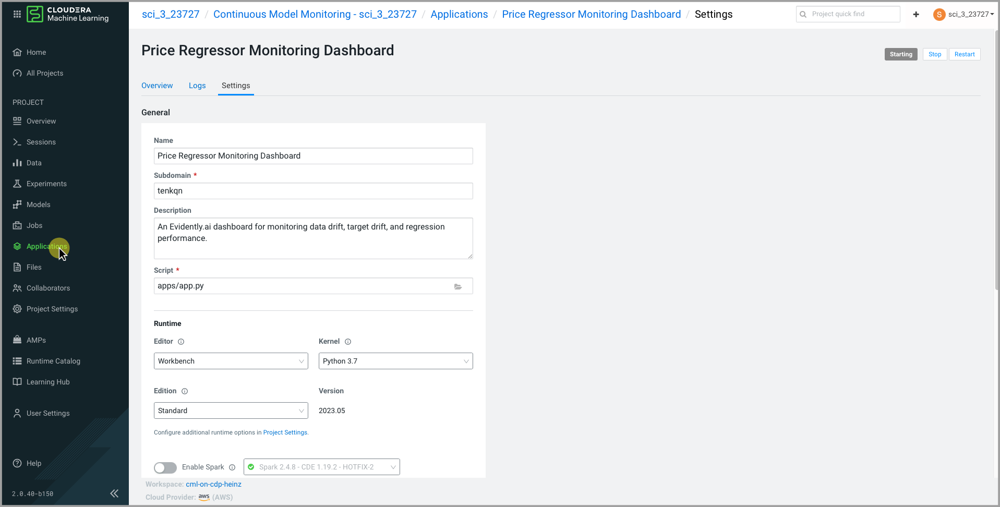
-
Click the application ⋮ menu, and select Restart Application 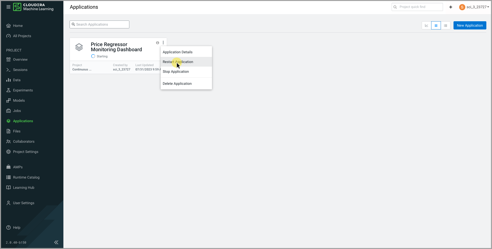
{kind=link}
{kind=link}
{kind=link}
{kind=link}
{kind=link}
{kind=link}
{kind=link}
{kind=link}
{kind=link}
Explore drift and variations in the model performance
-
Explore the Dashboard 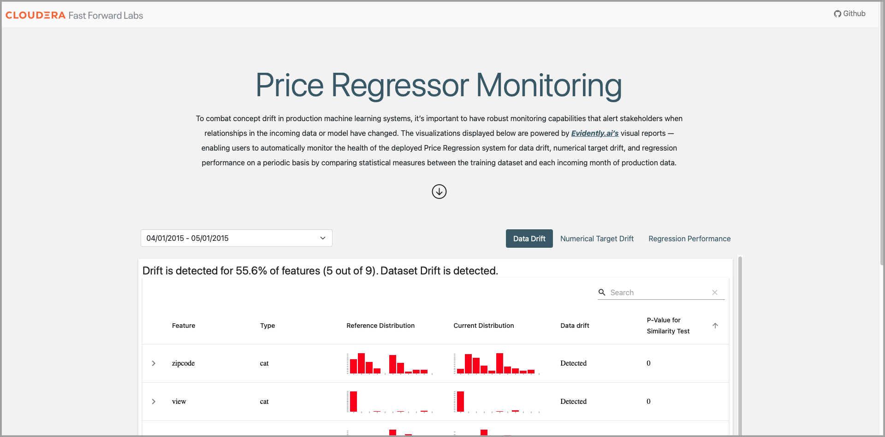
-
Explore the three tabs at different dates
- Is data monotonously drifting?
- Is there Numerical Target Drift at any point?
- Are there any significant variations in the model performance?
{kind=link}
Identify the file that creates the Evidently dashboard
Project Structure
18.
├── LICENSE
├── README.md
├── .project-metadata.yaml # declarative specification for AMP logic
├── apps
│ ├── reports # folder to collect monitoring reports
│ └── app.py # Flask app to serve monitoring reports
├── cdsw-build.sh # build script for model endpoint
├── data # directory to hold raw and working data artifacts
├── requirements.txt
├── scripts
│ ├── install_dependencies.py # commands to install python package dependencies
│ ├── predict.py # inference script that utilizes cdsw.model_metrics
│ ├── prepare_data.py # splits raw data into training and production sets
│ ├── simulate.py # script that runs simulated production logic
│ └── train.py # build and train an sklearn pipeline for regression
├── setup.py
└── src
├── __init__.py
├── api.py # utility class for working with CML APIv2
├── inference.py # utility class for concurrent model requests
├── simulation.py # utility class for simulation logic
└── utils.py # various utility functions
The Continuous Model Monitoring AMP project structure is above.
-
Select Models from the project menu, you see the Price Regressor model is deployed.
-
Click on the Price Regressor model.
-
Explore the model's properties. What file is the model based on? Which function is called?
-
Click the Test button to test the model. View the results.
-
Click Files in the project menu. Navigate to the
scripts/predict.pyfile. Click the Open in Session button. -
Go to line 87 and examine the
cdsw.track_metriccall that is used to store the prediction metrics in the CML PostgreSQL metrics database.
Note
Your CML workspace must have the Enable Model Metrics option selected when it is provisioned in order to track metrics.
The src\simulation.py file is the main simulation routine and mimics a production monitoring use case.
This simulation assumes the Price Regressor model has already been deployed, and accepts that model name as input. The .run_simulation() method operates the main logic of this class. Namely, it:
- Scores all training data against the deployed model so we can query metrics from the Model Metrics database for evaluation
- Initializes a simulation clock, which is just a list of date ranges from the prod_df to iterate over. These batches mimic the cadence upon which new data "arrives" in a production setting.
- For each simulation clock date_range, we:
- Query the prod_df for newly listed records and score them using deployed model
- Query the prod_df for newly sold records and add ground truths to metric store
- Query the metric store for those newly sold records and generate new Evidently report
- Redeploy the hosted Application to surface the new monitoring report
-
Navigate to
src/simulation.pyand open the file in the Workbench Editor. -
Examine the
query_model_metricsmethod on line 340. This method reads the metrics stored in the CML model metric database. -
Examine the
build_evidently_reportsmethod on line 404. This method builds the reports and saves them as HTML to be served by the Price Regressor Monitoring Dashboard application. -
Go to line 186 and examine how the simulation deploys the updated Price Regressor Monitoring Dashboard application upon simulation completion. This is an example of using the CML API to deploy an application. More details can be seen in the
src/api.pyfile.
End of Exercise